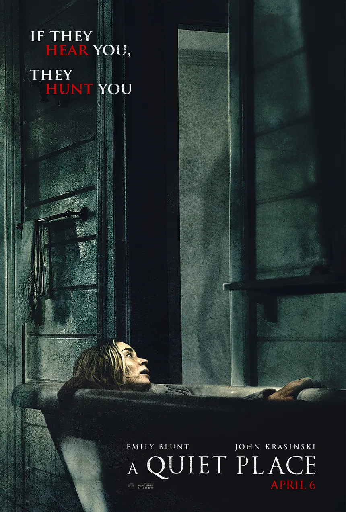

Fun-Facts About the Quiet Place Cast Members
Director and actors John Krasinski and Emily Blunt, who play the parents in the movie, are actually a married couple off-screen as well. To give the film a more authentic feel and evoke emotional power through the connection of closeness and family, the couple included their own family photos within the movie. A fact about Emily Blunt is that she initially didn’t want to play the role in the film. Although her husband, John Krasinski, was the director of the movie, she initially suggested several actresses to play the role of Evelyn Abbott. However, it wasn't until she read the script that she decided she wanted to play the part of the mother character. Regarding the facts about the movie's children, Millicent Simmonds, the young lady who plays Regan in the film and is deaf in and out of the movie, helped teach and improve many of the cast members when they were signing during the film. For Noah Jupe, the child actor who plays Marcus Abbot in the film, although he speaks with no accent in the movie, he is actually a British talent that George Clooney personally recommended for the role of Marcus in Krasinski’s film. (Refer to "The Lead Cast Members" list below if you need a refresher on which actor played which character!)
Fun Facts About the Creation of the Movie
In the creation of the movie A Quiet Place, the film was technically on a small budget. It was made on a budget of $17 million, but when it finally hit theaters, it grossed $340 million worldwide, making it a huge box office success. One may not know this fact, but John Krasinski not only starred in and directed the film, but also co-wrote and co-produced it, even donning a motion capture suit to act as the monsters within the film. He, who also played the father, ensured that his vision came to life on set by maintaining a quiet environment. This was achieved by minimizing distractions from the cast, film crew, and sound crew. During the filming of the movie, Krasinski laid out sand on the floor and had painted footprints to avoid loud noises. He even made the funny comment in an interview with Empire on the issue of whether a cast member needed to fart, saying, “Just try to crop-dust, as long as they're not loud and violent, you're going to be fine.” This shows he took the noise issues very seriously! (There is a link below in the "Links to websites that talk more about the movie" that talks about it further!)
The Lead Cast Members
- John Krasinski: Lee Abbott
- Emily Blunt: Evelyn Abbott
- Millicent Simmonds: Regan Abbott
- Noah Jupe: Marcus Abbott
- Cade Woodward: Beau Abbott
Links to websites that talk more about the movie:
- Wikipedia: A Quiet Place
- IMDb: A Quiet Place
- 12 Things you didn't know about A Quiet Place
- Yes, John Krasinski Thought About Farts In A Quiet Place
